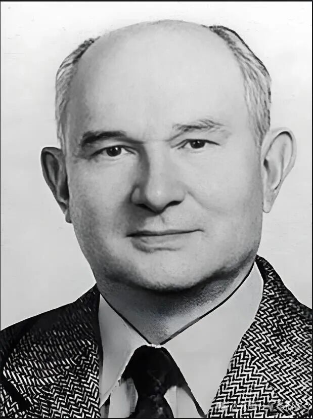
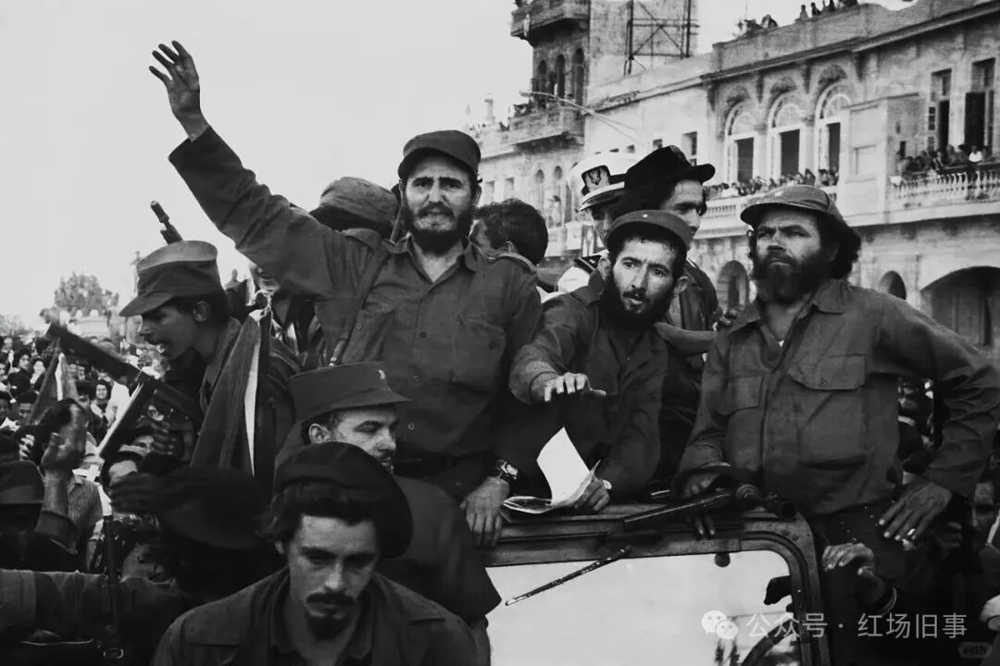

第12期 FBI历史上最大的灾难：20年、6000页绝密文件，克格勃的顶级鼹鼠——汉森第11期 从CIA反苏负责人到克格勃顶级间谍：艾姆斯的双面人生楔子：1962年6月12日，芝加哥某酒店房间傍晚六点，窗外的霓虹灯刚亮起来。玛利亚·格伦坐在床边，看着对面那扇门。门外走廊里有脚步声，来来回回走了三趟，每次都在她的门口停一下，她知道那是什么人。三天前，她在芝加哥联合车站下车时，就发现自己被盯上了。那个在报摊前看报纸的男人，今天早上出现在酒店大堂喝咖啡。同一个位置，同一份报纸，翻了三个小时没翻页。她跑不掉了，从风衣口袋里摸出一个小小的金属圆筒，那是出发前就准备好的氰化物胶囊。天亮前，她要留下人生中最后一份情报，只有一句话：“我什么都没说。”她不知道的是，把她送上这条绝路的，是她在美国的顶头上司：德米特里·波利亚科夫，七个月前，刚刚向美国人递上了一张写有47个名字的名单。她的名字，在第47个。
一、谁出卖了她？1961年11月26日
时间倒回七个月前。1961年11月26日，华盛顿。一个叫波利亚科夫的苏联上校第二次走进美国联邦调查局的秘密办公室。两周前他第一次来时，带了一份6人名单。美国人半信半疑。

波利亚科夫这次他直接掏出一张纸，上面密密麻麻写着47个名字。他说：“这是我潜伏以来能记下的所有在西方工作的苏联特工。”第47个名字后面写着：“玛利亚·格伦，纽约曼哈顿美容院老板娘，格鲁乌资深特工，代号‘格伦’。”美国人盯着那张纸，手都在抖，47个人，没有这份名单的话，够他们忙十年了。波利亚科夫为什么出卖自己人？1960年，他3岁的儿子患心脏病急需去美国做手术，莫斯科拒绝支付40万美元。孩子夭折后，他决定毁掉这个让他绝望的体制。那张名单，是他的投名状。这47个名字，都是苏联在美国的高级间谍。
二、美容院里的“闲聊”
把时间往前拨十年。20世纪50年代的纽约曼哈顿上东区，有一家不起眼的美容院。装潢不张扬，但圈内人都知道：这是贵妇人们的地盘。参议员太太来做面膜，将军夫人来修指甲，华尔街高管的妻子来烫头发。她们躺在美容椅上，嘴根本停不下来。
“我丈夫昨晚又开会开到凌晨三点，也不知道在忙什么……”“听说白宫那边最近气压很低，老头子回家都不说话……”“你知道吗，XX将军下周又要出差，这次去的地方挺远……”玛利亚一边给她们做面部按摩，一边听着，偶尔附和几句，从不追问。她懂规矩——贵妇人最讨厌多嘴的人。但当天晚上，这些“闲聊”就会变成一份份情报，通过秘密渠道发往莫斯科。玛利亚不是普通的美容师。她是克格勃花了十年培养出来的“社交型间谍”——这种人不偷文件，不破密码，只负责一件事：让该说话的人自己开口。将军晚上接的电话、部长吃饭时的牢骚、外交官床上的醉话……这些东西永远不会出现在文件里，但往往比文件值钱一百倍。
三、1960年，她改变了古巴的命运
1959年1月，卡斯特罗推翻巴蒂斯塔政权，古巴革命胜利。美国人的反应比任何人预想的都快。那年底，华盛顿已经开始秘密策划如何拔掉这颗“后院的钉子”。

卡斯特罗1960年3月，艾森豪威尔总统批准了一项绝密计划：由CIA招募和训练古巴流亡者，准备武装入侵古巴。行动代号“冥王星”。玛利亚的机会来了。她通过一位老顾客，白宫高级幕僚的妻子，发展了一名“下线”。这个人直接接触美国对古巴的所有机密文件。1960年春天，她收到一条消息：美国正在大规模训练古巴流亡者，准备在年内发动武装入侵，目标是推翻卡斯特罗政权。三天后，这份情报就摆在莫斯科的办公桌上。一周后，哈瓦那的决策者手里多了一份详细报告，他们提前知道了对手的牌。1961年4月17日，当1500名古巴流亡者在猪湾登陆时，迎接他们的是卡斯特罗早已部署好的四万大军。三天之内，入侵者全军覆没。从这以后，古巴彻底倒向苏联，也为1962年古巴导弹危机埋下伏笔。那一年，莫斯科给玛利亚记了一等功。但她谁也不能说，只能晚上一个人坐在公寓里，对着窗外的霓虹灯轻轻笑了一下。
四、1962年初，十字架
1962年初，FBI拿着波利亚科夫的名单花了几个月交叉比对，才把“玛利亚·格伦”这个名字和曼哈顿那家美容院对上号。但他们没有直接动她，而是盯上了她的上线，一个叫马斯洛夫的克格勃特工。1962年3月的一天，马斯洛夫正准备和玛利亚接头。FBI特工突然出现，当场逮捕了他。马斯洛夫在被按住的一瞬间，悄悄在身边的墙上留下了一个白色十字架。那是他们约定的紧急警报信号。三个小时后，玛利亚路过那个接头点。看到了那个十字架。没有回头，加快脚步，拐进最近的地铁站，用备用证件买了一张去芝加哥的票。她以为自己跑掉了。
五、芝加哥酒店房间的最后一夜
1962年6月9日，玛利亚在芝加哥联合车站下车。她换了两家酒店，改了三次发型，扔掉了所有能识别身份的东西。但FBI还是追上来了。6月12日傍晚，透过酒店房间的窗户，发现对面街角那辆黑色轿车已经停了四个小时。她知道，这是最后一晚了。坐在床前，看着芝加哥的夜景，留下人生中最后一份情报，确定藏好不被发现后，她把氰化物胶囊放入口中。想起20年前被招募的那个下午。教官问她：如果有一天跑不掉了，怎么办？她回答：我会自己了断。教官点点头：记住，被捕就等于叛变。莫斯科不会相信任何被抓住的人。凌晨四点，门外传来脚步声。有人在她门口停了下来，玛利亚咬碎了那颗胶囊。当FBI特工撞开门冲进来时，她已经倒在地上，嘴角挂着一丝血迹。
六、死了两次的女人
玛利亚死后，美国人把她的尸体秘密埋葬在芝加哥郊外一个没有标记的地方，然后放出消息：“玛利亚·格伦还活着，正在为美国人工作。”这个假消息传回莫斯科，克格勃信了。档案上被批了三个字：“叛国者。”此后的27年，苏联一直把她当成叛徒。她的名字被钉在耻辱墙上。直到1985年，被克格勃策反的中情局官员艾姆斯供出了美国在苏联军情部门中的“鼹鼠”，其中就有波利亚科夫，苏联当局开始调查这些叛徒经手过的情报和特工。1988年3月波利亚科夫被秘密逮捕，1991年苏联解体，档案解密，真相才浮出水面。
艾姆斯调查员翻开那本泛黄的卷宗，看到当年波利亚科夫的审讯记录，那上面清清楚楚写着：玛利亚·格伦直到最后一刻，没有说出任何一个名字。调查员沉默了很久，原来她不是叛徒。她是被自己人冤枉了27年的英雄。而那个真正出卖她的波利亚科夫，在玛利亚死后还继续当了24年的“鼹鼠”，直到1985年被另一个叛徒艾姆斯出卖，1988年才被克格勃处决。命运有时候就是这么讽刺：出卖她的人比她多活了27年，而她，到死都不知道自己是怎么暴露的。欢迎在评论区分享你的想法。下期预告：哈罗德·尼科尔森——美国史上级别最高的CIA内鬼1996年11月16日，华盛顿杜勒斯机场。一个中年男人正准备登机飞往苏黎世，FBI特工突然冲上来把他按倒在地。他叫哈罗德·尼科尔森，CIA高级官员，美国有史以来被判间谍罪的最高级别CIA官员。你以为1997年入狱就结束了？不，更离谱的还在后面。2006年，他在监狱里，通过探监和加密信件，把自己的小儿子训练成接班人，替他去墨西哥、秘鲁跟俄罗斯人接头。一个被判23年的囚犯，硬生生在监狱里又搞了三年谍战。他儿子后来怎么样了？俄罗斯人为什么对他被捕的细节那么感兴趣？敬请期待。